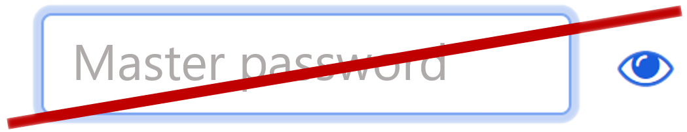
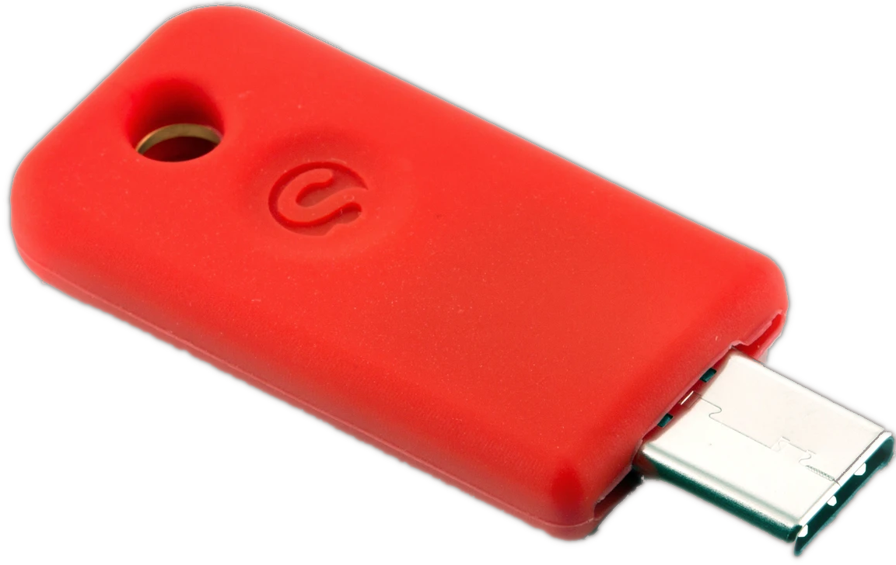

DiceKeys are backup security keys that
prevent lockouts and make it easier to adopt stronger online security.

Use password managers without memorizing ‘master’ passwords

=
Create FIDO security keys you can replicate if broken or lost
Ensure ongoing access to the data in end-to-end encrypted apps
Uniquely reliable and trustworthy by design
Readable by your devices and your own eyes
DiceKeys can be read by most any phone, tablet, or computer.
Or, you can use your own eyes to read each face by its:
letter, which identifies the die
digit, which identifies the face of the die, and
orientation (rotation) of the face relative to the box
The lines and dots are error-correction codes: extra copies of the letter and digit.
Our algorithms use them to triple check each letter and digit read, making automated
reading extraordinarily reliable.
Open and tangible
Our open software for reading DiceKeys
and performing cryptographic operations with them
is available for you to inspect, compile, modify, and use for eternity.
In contrast to hardware designed to resist inspection,
you can inspect every aspect of DiceKeys
with your own eyes.
Your security is literally in your own hands.
Designed to last a human lifetime
Most products are designed to be replaced,
and many technology products are designed to be replaced dozens of times over a human lifetime.
In contrast, one need only open up a decades-old game to observe the longevity of dice.
Future-proof
In 50 years, our devices may no longer support Bluetooth or USB-C, but we will still have
eyes and our devices will still have cameras.
Even if the company behind
DiceKeys
is long gone,
our license gives you access to use our software for eternity, and allows the open-source
community to maintain and improve it.
Presentations and video demos
See how DiceKeys work in this lighting talk presented at the 2020
Symposium on Usable Privacy and Security (SOUPS)
Availability
Our first shipment of DiceKeys will be sold paired with a SoloKey,
so that you can seed the SoloKey from your DiceKey and replace the
SoloKey with a cryptographically-identical replica if you break or lose it.
Partners and developers and members of the press can contact us for test units,
which have completed manufacturing are en route to our distributor.
Team
Stuart Schechter
Stuart's career as an inventor and researcher in the field of usable security research spanned his years at Microsoft Research, MIT Lincoln Laboratory, and his PhD at Harvard University. He currently teaches Usable Privacy and Security for the University of California at Berkeley's Master's Program in Cybersecurity.
Joseph Bonneau is an Assistant Professor at NYU and was formerly affiliated with Stanford, Princeton, Cambridge (PhD), the Electronic Frontier Foundation, Google, Yahoo, and Cryptography Research.
He is known for groundbreaking work on authentication, including analysis of 70m passwords at Yahoo, and for his security analyses of cryptocurrencies.
Of particular relevance for DiceKeys, he created the word lists for EFF's DiceWare, a technology to help users to create phrase-based passwords from standard dice.
Bruce Schneier is an internationally renowned security technologist, called a "security guru" by The Economist. He is the author of over one dozen books--including his latest, Click Here to Kill Everybody--as well as hundreds of articles, essays, and academic papers. His influential newsletter "Crypto-Gram" and his blog "Schneier on Security" are read by over 250,000 people. He has testified before Congress, is a frequent guest on television and radio, has served on several government committees, and is regularly quoted in the press. Schneier is a fellow at the Berkman Klein Center for Internet & Society at Harvard University; a Lecturer in Public Policy at the Harvard Kennedy School; a board member of the Electronic Frontier Foundation, AccessNow, and the Tor Project; and an Advisory Board Member of the Electronic Privacy Information Center and VerifiedVoting.org.
In practice, DiceKeys have 196 bits of security.
Before deriving cryptographic secrets, the software must first canonicalize the orientation
of your DiceKey so that it will work regardless of the
orientation at which it's scanned.
This important step reduces the space of possible keys by a factor of four,
yielding a reduction in bit strength from 198 to 196 bits.